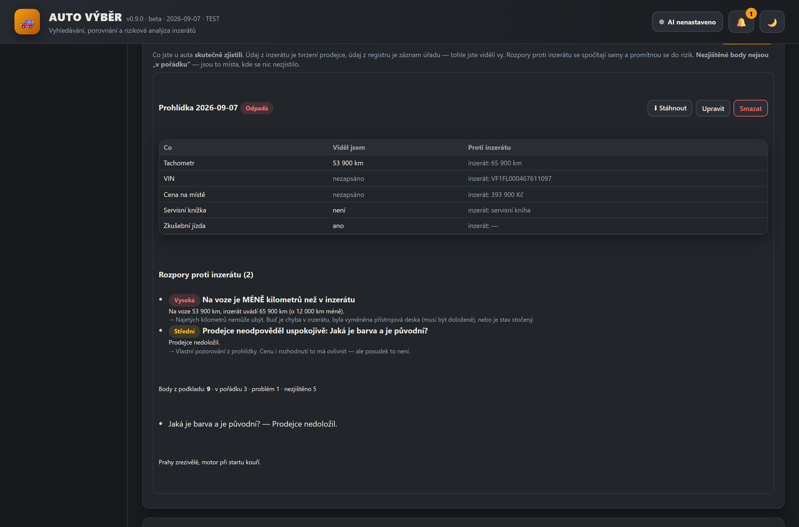

🚗AUTO VÝBĚR — ricerca di auto usate
La mia app per cercare un'auto usata. Raccoglie gli annunci, li uniforma, assegna un punteggio deterministico da 0 a 100, trova rischi e contraddizioni — e per ogni auto con il VIN pubblicato avvia da sola la verifica dello storico, senza dover cliccare. Gira solo sul mio computer, non manda niente fuori e non usa nessun database a pagamento. Sa inoltre valutare la mia auto e dire con onestà su che cosa si basa quel prezzo, e legge il VIN da una fotografia. Per l'auto che sto per andare a vedere prepara le domande per il venditore. Dal VIN recupera i dati dal registro dei veicoli e con quelli compila il modulo. Dopo la visita annoto che cosa ho scoperto sull'auto, e le contraddizioni rispetto all'annuncio le calcola da sola. 348 test automatici.
Python 3.14 FastAPI SQLite SPA in JS puro pywebview (desktop) PyInstaller + Inno Setup 348 test
Che cosa fa
Comprare un'auto usata si riduce a due domande: il prezzo è ragionevole e che cosa non so di quest'auto. I portali di annunci rispondono solo alla prima, e pure male — ogni sito ha campi diversi, la stessa auto compare su tre siti con tre chilometraggi diversi e un dato mancante sembra innocuo quanto uno compilato. Questa app unisce tutto questo e soprattutto tiene ben separato ciò che è documentato da ciò che non lo è.
- Da un profilo di ricerca (marca, modello, anno, chilometraggio, prezzo, dotazione, zona) trova le offerte sulle fonti che lo consentono nel robots.txt — per le altre apre la ricerca nel browser o accetta un'importazione. Il robots.txt non si aggira e i CAPTCHA non si risolvono.
- Ogni offerta viene uniformata (unità, alimentazione, cambio, dotazione), deduplicata per VIN e somiglianza e confrontata con la mediana delle auto comparabili, con correzione per il chilometraggio diverso.
- Calcola un punteggio 0–100 su sei aree, dove ogni punto mostra da dove arriva. Un dato mancante non alza mai il punteggio — è una lacuna, non un pregio.
- Trova i rischi: prezzo sospettosamente basso rispetto al mercato, importazione senza storico, caparra richiesta prima di vedere l'auto, contraddizioni fra annunci e punti deboli noti del modello e del motore (27 voci, ognuna con fonte e data).
- Per un'auto con il VIN pubblicato verifica lo storico da sola e riporta i riscontri nei rischi, nel punteggio e nella lista dei preferiti.
Funzioni principali
- Verifica automatica del VIN. Il controllo si mette in coda da solo per ogni via con cui un'offerta entra nell'app — connettore live, risultato dell'agente AI, URL incollato, importazione CSV/JSON e inserimento manuale del VIN. La coda sta nel database, quindi sopravvive a un riavvio; lo stesso VIN in cinque annunci significa un controllo, non cinque.
- Stati onesti, non zeri rassicuranti. Un timeout, un blocco o un errore del parser non vengono mai salvati come «nessun riscontro». E accanto a «nessun riscontro nelle fonti verificate» c'è scritto che questo non significa che l'auto sia a posto. L'ora in cui è stata scaricata la pagina non viene mai spacciata per la data dell'evento.
- Fonti come sono davvero. In automatico funzionano l'archivio annunci dell'app, NHTSA vPIC (di cui è scritto chiaramente che decodifica il VIN ma non fornisce lo storico) e il Registro ceco dei veicoli — quest'ultimo ha un'API pubblica e documentata e serve solo la propria chiave, che è gratuita. Il controllo del contachilometri, la ricerca della Polizia e i richiami dei costruttori sono dietro un CAPTCHA o un login, quindi restano un passaggio manuale con link e istruzioni — le protezioni non si aggirano. Niente di tutto questo è a pagamento.
- Contraddizioni che meritano attenzione. Chilometraggio in calo fra un annuncio e l'altro, due annunci contemporanei della stessa auto con chilometraggi diversi, anno o marca decodificati dal VIN che non corrispondono all'annuncio. Per ognuna è scritto che cos'altro potrebbe essere — da sola non è una prova di manomissione.
- Elenchi a discesa invece di scrivere. Marca, modello, generazione, colore e località di partenza si scelgono (39 marche, 303 modelli, 79 città). L'elenco dei modelli segue la marca scelta e ovunque c'è la via d'uscita «altro (scrivi a mano)», così il catalogo non blocca mai un'auto insolita.
- Dati dal registro dei veicoli tramite VIN. Il Registro ceco dei veicoli ha un'API pubblica e documentata. L'app ne ricava la data di prima immatricolazione, il numero di proprietari e utilizzatori, la validità della revisione, i documenti trattenuti e lo stato del veicolo — e ne fa contraddizioni rispetto all'annuncio. Per la propria auto basta inserire il VIN e il modulo si compila da solo. Si riempiono solo i campi vuoti: quello che hai scritto resta, e una differenza viene mostrata come differenza. Non si inventa nulla — il registro non tiene chilometraggio, cambio né trazione, e l'app lo dice; l'anno è indicato come ricavato dalla prima immatricolazione, non dalla produzione.
- Verbale della visita. Il promemoria è una metà, questa è l'altra: che cosa ho davvero trovato sull'auto. Un dato nell'annuncio è un'affermazione del venditore, un dato del registro è un atto pubblico — ma il contachilometri sul cruscotto l'ho visto io. Si annota che cosa ho visto e le contraddizioni rispetto all'annuncio si calcolano da sole: un VIN diverso sull'auto (allora l'intera verifica è girata su un'altra auto), un chilometraggio più basso di quello dichiarato (i chilometri non possono diminuire), un prezzo più alto sul posto, il libretto di manutenzione mancante. Tutto finisce nei rischi dell'auto. I punti da compilare sono gli stessi che stampa il promemoria — e partono da «non rilevato», non da «a posto». L'app non ne ricava sconti né prezzi: non ha basi per farlo e sarebbero numeri inventati.
- Promemoria per la visita. L'app registra con onestà che cosa manca di ogni auto — e da quelle lacune ricava domande per il venditore e punti da controllare sull'auto. Per ognuno è scritto perché: un punto senza motivo è solo un altro elenco puntato. Si basa solo su quello che l'app sa e non sa: dati mancanti, rischi rilevati, passaggi manuali della verifica del VIN, debolezze note del modello. I punti si spuntano e si possono scaricare da stampare, perché a vedere un'auto non si va col portatile. Non è un'ispezione né una perizia e non sostituisce il controllo in officina; una debolezza nota del modello è sempre indicata per quello che è — un punto su cui guardare meglio su quel modello, non un difetto riscontrato su quell'auto.
- VIN da una fotografia. Si fotografa la targhetta o la punzonatura e l'app propone quello che ha letto — salvarlo tocca a voi, dopo il confronto con la foto. Il riconoscimento gira sul mio computer (l'OCR incluso in Windows), la foto non viene mandata da nessuna parte e non si paga nulla. Il compito è più facile perché il VIN ha una forma fissa: niente lettere I, O e Q (la norma le ha escluse proprio perché si confondono con 1 e 0) e una cifra di controllo in nona posizione. Quella cifra però non è una prova: i costruttori europei spesso non la calcolano, quindi una discordanza non significa VIN letto male. La maggior parte del lavoro è servita a impedire al modulo di inventare un VIN dove non c'è: un numero di conto, una riga di fattura e «STK 06/2027 KM 182350» hanno anche loro diciassette caratteri, e una sequenza casuale azzecca la cifra di controllo circa una volta su undici.
- Vendi l'auto: valutazione della propria vettura. Registro la mia auto e l'app le calcola, dalle offerte che conosce, un prezzo di annuncio consigliato, una fascia realistica e le varianti vendita rapida / paziente. Per ogni offerta confrontata si vede se è stata contata e, se no, perché — incidentata, per ricambi, prezzo legato al finanziamento, prezzo senza IVA, doppione o il mio stesso annuncio. La stima di permuta non viene fornita affatto, perché l'app non ha prezzi di permuta documentati, e la base sono i prezzi richiesti, non quelli di vendita documentati — un annuncio sparito non dimostra una vendita. Lo sconto di trattativa e quello per la vendita rapida sono presupposti dichiarati e modificabili, non una misurazione. La bozza dell'annuncio nasce solo dai dati registrati compresi i difetti noti e l'app non la manda da nessuna parte.
- Preferiti e avvisi. Monitoraggio di prezzo e disponibilità, storico delle modifiche, avvisi locali per un nuovo rischio o un calo di prezzo. L'app non contatta mai il venditore, non prenota nulla e non paga caparre.
- Stima della distanza senza servizi esterni. La distanza dal venditore si calcola da una tabella offline di città e CAP; verificata su dieci tragitti noti con uno scarto entro il 12 %. È sempre indicata come stima, non come percorso esatto.
Anteprime



Le anteprime usano dati dimostrativi — annunci reali e note su auto specifiche non stanno sul web.
Stato
Versione beta v0.9.0 (settembre 2026), 348 test automatici più il controllo visivo di 20 schermate e un percorso interattivo nell'app. Applicazione completamente autonoma — gira solo sul mio PC in una finestra propria (pywebview), i dati restano in un file SQLite locale e gli aggiornamenti arrivano in silenzio dal NAS di casa. Privata, senza hosting pubblico e senza installer da scaricare. Non è una perizia né un'ispezione del veicolo — è uno strumento che mette ordine nelle offerte e soprattutto mostra che cosa è documentato e che cosa no.
Verificato solo in parte: la lettura del VIN da fotografia è stata provata su una foto reale di un VIN punzonato e su targhette disegnate. Una sola foto reale non è una statistica — luce, angolo o riflessi diversi possono andare altrimenti. Funzionano dal vivo due fonti esterne: la decodifica del VIN da NHTSA vPIC (non lo storico di manutenzione) e il Registro ceco dei veicoli, che fornisce dati di immatricolazione e tecnici — non lo storico di manutenzione né il chilometraggio. La mappatura della risposta del registro è verificata su una sola auto reale; altre auto possono avere campi diversi compilati. Il controllo del contachilometri, la ricerca della Polizia e i richiami restano un passaggio manuale. La valutazione della propria auto si basa sui prezzi richiesti, non su quelli di vendita documentati, e per questo non fornisce alcuna stima di permuta.